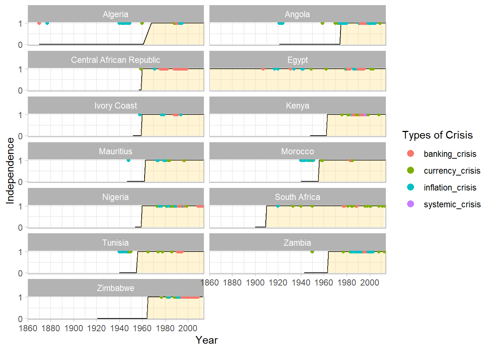
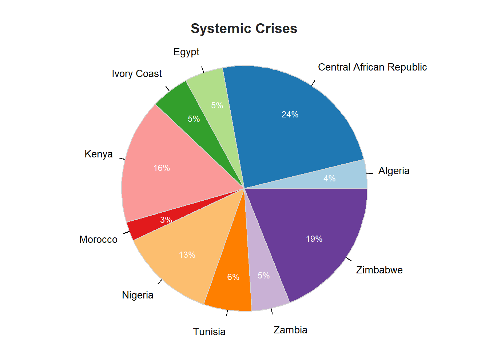
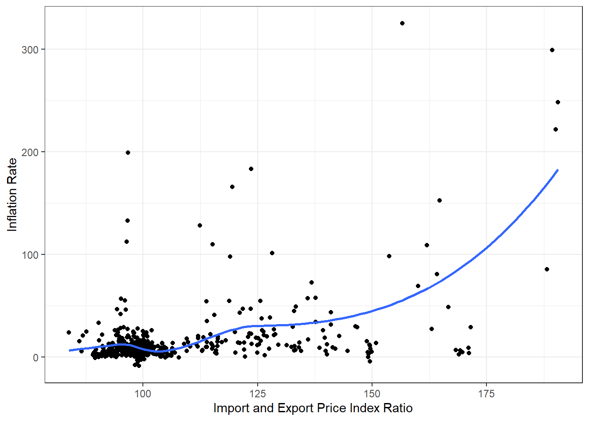

Warning: package 'countrycode' was built under R version 4.2.2
Code
library(summarytools)
Warning: package 'summarytools' was built under R version 4.2.2
Attaching package: 'summarytools'
The following object is masked from 'package:tibble':
view
Code
library(htmlTable)library(lessR)
Warning: package 'lessR' was built under R version 4.2.2
lessR 4.2.4 feedback: gerbing@pdx.edu
--------------------------------------------------------------
> d <- Read("") Read text, Excel, SPSS, SAS, or R data file
d is default data frame, data= in analysis routines optional
Learn about reading, writing, and manipulating data, graphics,
testing means and proportions, regression, factor analysis,
customization, and descriptive statistics from pivot tables.
Enter: browseVignettes("lessR")
View changes in this and recent versions of lessR.
Enter: news(package="lessR")
**New Feature**: Interactive analysis of your data
Enter: interact()
Attaching package: 'lessR'
The following object is masked from 'package:summarytools':
label
The following objects are masked from 'package:dplyr':
recode, rename
Code
library(RColorBrewer)library(corrplot)
corrplot 0.92 loaded
Code
load("Final_project- Said Arslan.RData")knitr::opts_chunk$set(echo =TRUE, warning=FALSE)
Introduction
The primary data I used for this project is extracted from Kaggle: https://www.kaggle.com/chirin/africa-economic-banking-and-systemic-crisis-data. The dataset is a derivative of Reinhart et al’s Global Crises dataset. It was downloaded from: https://www.hbs.edu/behavioral-finance-and-financial-stability/data/Pages/global.aspx Non-African countries were filtered out from the dataset. And, variables containing notes or sparse data were removed. Years with no data were also filtered out.
The dataset specifically focuses on the Banking, Debt, Financial, Inflation and Systemic Crises that occurred, from 1860 to 2014, in 13 African countries, including: Algeria, Angola, Central African Republic, Ivory Coast, Egypt, Kenya, Mauritius, Morocco, Nigeria, South Africa, Tunisia, Zambia and Zimbabwe. Each country-year observation (row) includes macroeconomic indicators of the country. I also web scraped additional import and export price index data for these countries, from Commodity of Terms of Trade Database of IMF: https://data.imf.org/?sk=2CDDCCB8-0B59-43E9-B6A0-59210D5605D2&sId=1434492942851, which I think will play essential role in my analysis.
The main purpose of the project is to understand what patterns and trends are associated with mainly systemic crises and other type of economic crises as well as how they differ by country.
In the main dataset, each variable has its own column, each observation has its own row, and each value has its own cell.
The variables in the primary dataset
case is a factor variable that identifies the index for each country from the original, global dataset.
cc3 is a factor variable that identifies each country with a three letter code.
country is a character variable that names each country.
year is a date variable that identifies the year of the observation.
systemic_crisis is a binary variable that identifies whether a systemic crisis is observed in that year or not. Systemic crisis means the nationwide banking crisis which its impact spreads to the other sectors.
exch_usd is a numeric variable that gives exchange rate of USD to the country’s currency. For a country, the lower the exchange rate the more valuable its currency.
domestic_debt_in_default is a binary variable that shows if the government failed in repaying its domestic debts or not.
sovereign_external_debt_default is a binary variable that identifies if sovereign external debt default occurred or not. It is a failure of a government to honor some or all of its debt obligations to the external lenders.
gdp_weighted_default is a numeric variable which gives the ratio of debt to gdp when debt default is observed.
inflation_annual_cpi is numeric variable that shows inflation rate based on consumer price index.
independence is a binary variable that indicates if the country is independent or not as of observation year.
currency_crises is a binary variable that identifies currency crisis occured or not in the observation year.
inflation_crises is a binary variable that identifies inflation crisis occured or not in the observation year.
banking_crisis is a binary variable that identifies banking crisis occured or not in the observation year.
For consistency I will first change column names with “crises” to “crisis” as well as “inflation_annual_cpi” to “inflation_rate. Second, I will remove case number that is not needed in my analysis. Then, I will recode”banking_crisis” variable which is differently coded in the dataset than the other crisis indicator variables.
I would like to supplement different economic indicators to the original dataset to better analyze the economic crises, however, there is no financial and economic data available for African countries that goes back to the 1800s or early 1900s.
That’s why, I wanted to first examine timeline of crisis in these African countries along with dates of their gaining independency.
Code
#I'll create a timeline that shows independence of each country and include point for years of crises in the plotfilt_crs <- ac %>%filter(if_any(ends_with("crisis"), ~ .x ==1)) %>%pivot_longer(cols =ends_with("crisis"), names_to ="type_of_crisis",values_to ="crisis_or_not") %>%filter(crisis_or_not ==1)ac %>%ggplot(aes(year, independence)) +geom_line() +geom_area(fill ="#FFDB6D", alpha =0.3) +geom_point(data = filt_crs, mapping =aes(year, crisis_or_not, color=type_of_crisis)) +guides(color=guide_legend("Types of Crisis", override.aes =list(size =3))) +scale_y_continuous(name ="Independence", breaks =c(0,1)) +scale_x_date(name ="Year", date_breaks ="20 years", date_labels ="%Y", limits =c(as.Date("1860-01-01"), NA), expand=c(0,0)) +facet_wrap(vars(country), ncol =2) +theme_light()

The plots above reveal crucial situation for my further analysis. As we can see, most of the economic crisis in African countries actually took place after they gained independence and most of the countries got their independency around 1960s. Especially, all the systemic crises are after1960s. Therefore, I decided to focus on the data after 60s in analysis. Also, it appears that including additional economic indicators, which are usually start from 60s, to the main dataset would comply with this perspective
Merging Commodity Import & Export Price Index obtained by web scraping with the main dataset
In order to expand the features of the main dataset, I scrape additional data provided by the Commodity of Terms of Trade Database of International Monetary Fund (IMF). While the IMF provides many formats including excel and csv file formats but I instead wanted to invest time on scraping the rendered html using their online table viewer: https://data.imf.org/?sk=2CDDCCB8-0B59-43E9-B6A0-59210D5605D2&sId=1434492942851.
Using the viewer I selected the desired data and used inspect in Chrome to view the rendered html for the current page. Then copied the div representing the entire table in html and pasted the text into local files.
First I wrote a function to convert the html, into a data frame matching the online table viewer.
Code
imf_html_to_df <-function (html_filename){# getting column labels by looking at the custom filename filename_pieces =str_split(html_filename, "_")[[1]]# read all the html in the file html_str =readLines(html_filename)# function returning the elements matched by the regex html_to_byRowList =function(full_file_str){ regex_exp ="<div class=\"PPTSCellConText.*?>(.*?)<" result = stringr::str_match_all(full_file_str, regex_exp)return(result[[1]][, 2]) }# all elements in the df by row elements =html_to_byRowList(html_str) columns =c("country", seq(as.integer(filename_pieces[3]), as.integer(filename_pieces[4]), by=1)) num_columns =length(columns) schema =matrix(ncol = num_columns, nrow =0) df =data.frame(schema)colnames(df) = columns# grab elements, ignoring column headers elements = elements[num_columns:length(elements)]# populate df iterating through element by df row start =1while(start + num_columns -1<=length(elements)){ curr = elements[start:(start+num_columns-1)] curr =do.call(c, list(list(curr[1]), as.double(curr[2:(length(curr))]))) df[nrow(df) +1,] = curr start = start + num_columns }# add cc3 labels used in joining later df$cc3 =as_factor(countrycode(df$country, origin ='country.name', destination ='iso3c'))return(df)}
Applying the transformer function on html export price index files. They are in 20 year grouping since at most 20 columns render.
Attaching import price data to the main data frame.
Code
ac_imf <-inner_join(ac_imf, import_df_joinable, by =c("cc3", "year"))sample_n(ac_imf, 10) %>%htmlTable()
cc3
country
year
systemic_crisis
exch_usd
domestic_debt_in_default
sovereign_external_debt_default
gdp_weighted_default
inflation_rate
independence
currency_crisis
inflation_crisis
banking_crisis
exp_pi
imp_pi
1
EGY
Egypt
1987-01-01
0
0.7
0
0
0
25.185
1
0
1
0
95.83
95.82
2
CIV
Ivory Coast
1984-01-01
0
486.5
0
1
0
4.281
1
0
0
0
101.51
96.88
3
DZA
Algeria
1982-01-01
0
4.6355
0
0
0
6.593
1
0
0
0
87.6
98.99
4
ZMB
Zambia
1975-01-01
0
0.0006429
0
0
0
10.16949153
1
0
0
0
83.13
95.84
5
CAF
Central African Republic
2009-01-01
0
455.3359711
0
1
0
3.522
1
0
0
0
99.26
99.4
6
KEN
Kenya
1995-01-01
1
55.9389
0
1
0
1.554
1
0
0
1
98.09
94.42
7
NGA
Nigeria
1996-01-01
0
21.8861
0
0
0
29.292
1
0
1
0
74.6
99
8
MUS
Mauritius
1966-01-01
0
4.77862
0
0
0
2.982014118
1
0
0
0
95.56
91.73
9
NGA
Nigeria
2007-01-01
0
117.968
0
0
0
5.413
1
0
0
0
94.98
99.73
10
EGY
Egypt
1999-01-01
0
3.405
0
0
0
3.745
1
0
0
0
94.97
95.02
Creating new variables
I have now export price index and import price index data included in the data set. I will also create yearly change rates for export&import indices so that I could compare them with inflation rate for my analysis. I will use lag function to calculate change rates.
Before producing summary tables, I would like to convert inflation rate and exchange rate values to two-decimal format for consistency with values of other variables in the dataset. Also, it the tables will look more tidy with this way.
Generated by summarytools 1.0.1 (R version 4.2.1) 2022-12-23
My last form of the dataset is composed from 629 observations and 17 variables. Each observation includes country-year economic indicators. 17 variables consists of: - 2 categorical variable - 1 date variable - 7 numeric variable - 7 binary variable
Univariate analysis
Year
Dataset covers 50 years from 1965 to 2014. Since we have 13 countries, each year should have frequency of 13.
So, only for 4 years there is no observation for 2 countries and 13 years have missing information for only 1 country. All other 37 years include data from all countries, which is good.
Country
According to the summary table, 8 of 13 countries have frequency of 50 which is as expected, however 5 countries have less than 50 frequency, which means that there is no observation for those countries for some years.
Median exchange rate of Central African Republic and Ivory Coast are significantly higher than exchange rates of other countries. HOwever, their box plots are not highly right skewed, they disperse evenly over their values. On the other hand, Nigeria and Angola have significantly right skewed box plots, which might be a sign that these countries experienced more currency crises than other countries. Similarly. Zimbabwe have the lowest median exchange rate but it has huge outlier points, which poses a bad evidence for Zimbabwe currency.
Currency Crises
currency_crisis variable should only consist of 0 and 1 values but When we look at the summary table, we see that there are three cells with value of 2. I think they are wrong entries and their true value is 1. So let me fix them first.
As I expected in previous part, Zimbabwe and Angola had currency crises more often than other countries. Even though Central African Republic and Ivory Coast have higher exchange rate generally, they experienced a currency crisis only once.
GDP weighted default
According to the summary table, gdp weighted default is 0 majority of the time. When it is not 0, it is between 0 and 1 because it gives debt default and gdp ratio of the country. I will rescale gdp weighted default values so it shows percentage of gdp and then visualize the distribution by histogram.
Over the years that covered by transformed dataset, only Angola was not independent from 1965 to 1975. So, it doesn’t enable us to evaluate the effect of independence on economic crisis.
Inflation Rate
According to the summary table, inflation rate have some extreme values. Let me first find them.
As we can see from the table that all countries’ median inflation rate is around normal/acceptable values, however, Angola has a very extreme maximum value (4146%). In addition to Angola, Zimbabwe has an astronomic maximum inflation rate with 21989695%. It is either a recording error or there is a very very exceptional thing happened in Zimbabwe for a year because Zimbabwe has median inflation rate of only 12%.
So there are 6 exceptional observations with higher than 1000% inflation rate. To deal with these cases, I will fix them to 1000% for health of my further analysis.
My main focus of analysis is systemic crisis. According to the summary table, 79 times systemic crisis were observed over 50 years. In this perspective, the first thing I would like to know is how the distribution of systemic crises is between countries in terms of percentage of occurrence. Also I expect that the countries that had systemic crises also experienced banking crises. According to the summary table, 91 times banking crises observed. To verify my hypothesis I will visualise countries’ systemic crises and banking crises experiences over pie charts
Code
systemic_pie <- ac_imf %>%filter(systemic_crisis==1) %>%select(country)PieChart(country, hole =0, values ="%", data = systemic_pie, fill =brewer.pal(n =12, name ="Paired"), main ="Systemic Crises", quiet =TRUE)

Code
banking_pie <- ac_imf %>%filter(banking_crisis==1) %>%select(country)PieChart(country, hole =0, values ="%", data = banking_pie, fill ="rainbow", main ="Banking Crises", quiet =TRUE)
As I expected, countries which had systemic crises more often experienced banking crises more often as well such as Central African Republic, Zimbabwe and Nigeria, These pie charts above also revealed another thing that all of the 13 countries observed banking crises at least once whereas only 10 countries observed systemic crises. So, there are 3 countries that had banking crisis but no systemic crisis.
These countries did not have systemic crises and also they had banking crises much less frequent than other countries, which makes me think that banking crises are related to systemic crises. To verify that, I will plot timelines for systemic crises and banking crises for each country.
Plots for Central African Republic, Zimbabwe, Kenya, Algeria, Ivory Coast, Tunusia, Nigeria, Zambia and Morocca pose big evidence that there is very close relationship between banking crises and systemic crises. Indeed, it looks that whenever a country had systemic crisis it had banking crisis as well. The reverse of that not be true though. From the plots above, we see that Angola and South Africa had banking crises for few times but they did not experience systemic crises meanwhile. However,
Besides that, the plots above show that banking and sytemic crises became more frequent after 1980s. I will now investigate it and also include currency and inflation crises to my analysis.
So, the graph tells us that beginning with late 1980s more African countries started to experience crises more often. This trend lasted until 2000s. 1995 is the peak year in terms of overall number of economics crises. Also, systemic crises took place more often during this period.
Domestic & Sovereign external debt in defaults
Now I would like to visualize domestic debt in default and sovereign external debt in default cases varied over 50 year in African countries.
The graph shows that domestic debt in default cases have almost the same trend as economic crises we analyzed in previous part. They started to become more often after mid 80s but they lasted in 2000s as well. On the other hand, there is no specific trend for domestic debt in default cases. So, we can result that in years of systemic crises, debts in default are prevalent as well.
Export & Import Price Index and Inflation Rate
Let me first visualize how export and import price indices change in African countries over 50 years.
From the plots, we can see that Algeria, Angola, Nigeria, Zambia had significant drop, Ivory Coast and Tunusia had moderate drop in their export price indices during 80s and 90s, which might cause trade deficits in these countries and trigger other macroeconomic issues.
I also expect that when the gap between Import and Export price indices of a country gets larger, it is more probable that the inflation rate in that country goes up. I would like to test my hypothesis in these African countries. To get better a fit and visualization, I will put an upper limit on inflation rate.
Code
ac_imf %>%filter(inflation_rate <500) %>%mutate(Import_Export= imp_pi/exp_pi*100) %>%filter(Import_Export <200) %>%ggplot(aes(x=Import_Export, y=inflation_rate)) +xlab("Import and Export Price Index Ratio") +ylab("Inflation Rate") +geom_point() +geom_smooth(se=FALSE) +theme_bw()

Correlation Between Economic Indicators
Lastly I would like to explore the correlation between the economic indicators of African countries I got in the dataset.
Thus, the biggest positive correlation is between the banking crises and systemic crises , which is I already pointed in my previous analysis. There is significant positive relationship between inflation rate and domestic debt in default. A new exploration I got form the correlation plot is that there is significant negative correlation between export price index and inflation crisis. It makes sense because these African countries depend on their exports in terms of revenue. If export price index gets lower, they face trade deficits and, as a result of that, their economies get into trouble.
Conclusion and Considerations for Further Analysis
Economic crises in 13 African countries covered in the dataset basically started after 1960s. Additionally, there is not much data collected before 1960s regarding these countries. Since it would not be reliable to interpret the scarce economic indicators older than 50-60 years old, I focused on the data collected after 1960s in my project. The core finding of the project is the strong relationsihp between the systemic crisis and banking crisis. If a country experienced a banking crisis, then their economy got usually through a systemic crisis as well. Most often, they happened at the same time. Besides that, these African countries were exposed to economic crises more often in the period between mid-1980s and 2000s. A possible explanation for that is as following: decline in global commodity prices such as Oil and petroleum products and other agricultural commodities in 1980s impacted the trade/external accounts of these countries because they are heavily depended on import revenues of natural resources. Due to limited diversification of their exports and having low capital inflows, fluctuations in global commodity prices had strong negative impact on their domestic economy.
My considerations for further studies would be:
More variables should be included such as interest rates, trade deficit, government deficit, growth rate etc.
More countries should be included to enable to make more reliable interpretations.
Commodity of Terms of Trade: Commodity Import/Export Price Index, Individual Commodities Weighted by Ratio of Imports to GDP Historical, Annual (1965-present), Fixed Weights, Index (2012=100): https://data.imf.org/?sk=2CDDCCB8-0B59-43E9-B6A0-59210D5605D2&sId=1434492942851
R for Data Science: https://r4ds.had.co.nz/index.html
https://r-graph-gallery.com/index.html
ggplot2: Elegant Graphics for Data Analysis: https://ggplot2-book.org/
DACSS 601 Class resources: https://github.com/DACSS/601_Fall_2022
Source Code
---title: "Final Project"description: "An Explanation to African Systemic Crises"author: "Said Arslan"date: "`r Sys.Date()`"format: html: toc: true code-fold: true code-copy: true code-tools: trueoutput: distill::distill_article---```{r}library(tidyverse)library(countrycode)library(summarytools)library(htmlTable)library(lessR)library(RColorBrewer)library(corrplot)load("Final_project- Said Arslan.RData")knitr::opts_chunk$set(echo =TRUE, warning=FALSE)```# IntroductionThe primary data I used for this project is extracted from Kaggle: https://www.kaggle.com/chirin/africa-economic-banking-and-systemic-crisis-data. The dataset is a derivative of Reinhart et al’s Global Crises dataset. It was downloaded from: https://www.hbs.edu/behavioral-finance-and-financial-stability/data/Pages/global.aspx Non-African countries were filtered out from the dataset. And, variables containing notes or sparse data were removed. Years with no data were also filtered out. The dataset specifically focuses on the Banking, Debt, Financial, Inflation and Systemic Crises that occurred, from 1860 to 2014, in 13 African countries, including: Algeria, Angola, Central African Republic, Ivory Coast, Egypt, Kenya, Mauritius, Morocco, Nigeria, South Africa, Tunisia, Zambia and Zimbabwe. Each country-year observation (row) includes macroeconomic indicators of the country.I also web scraped additional import and export price index data for these countries, from Commodity of Terms of Trade Database of IMF: https://data.imf.org/?sk=2CDDCCB8-0B59-43E9-B6A0-59210D5605D2&sId=1434492942851, which I think will play essential role in my analysis.The main purpose of the project is to understand what patterns and trends are associated with mainly systemic crises and other type of economic crises as well as how they differ by country.# Import and transform into tidy data## Read the primary dataset```{r}# ac <-# read_csv("C:/Users/saida/Documents/african_crises.csv",# col_types = cols(# case = col_integer(),# cc3 = col_factor(ordered = TRUE),# country = col_character(),# year = col_date(format = "%Y"),# exch_usd = col_double(),# gdp_weighted_default = col_double(),# inflation_annual_cpi = col_double(),# systemic_crisis = col_integer(),# domestic_debt_in_default = col_integer(),# sovereign_external_debt_default = col_integer(),# independence = col_integer(),# currency_crises = col_integer(),# inflation_crises = col_integer(),# banking_crisis = col_character()# )# )# # sample_n(ac, 10) %>% htmlTable()```In the main dataset, each variable has its own column, each observation has its own row, and each value has its own cell.### The variables in the primary dataset1. `case` is a factor variable that identifies the index for each country from the original, global dataset. 2. `cc3` is a factor variable that identifies each country with a three letter code.3. `country` is a character variable that names each country.4. `year` is a date variable that identifies the year of the observation.5. `systemic_crisis` is a binary variable that identifies whether a systemic crisis is observed in that year or not. Systemic crisis means the nationwide banking crisis which its impact spreads to the other sectors.6. `exch_usd` is a numeric variable that gives exchange rate of USD to the country’s currency. For a country, the lower the exchange rate the more valuable its currency. 7. `domestic_debt_in_default` is a binary variable that shows if the government failed in repaying its domestic debts or not.8. `sovereign_external_debt_default` is a binary variable that identifies if sovereign external debt default occurred or not. It is a failure of a government to honor some or all of its debt obligations to the external lenders.9. `gdp_weighted_default` is a numeric variable which gives the ratio of debt to gdp when debt default is observed.10. `inflation_annual_cpi` is numeric variable that shows inflation rate based on consumer price index.11. `independence` is a binary variable that indicates if the country is independent or not as of observation year.12. `currency_crises` is a binary variable that identifies currency crisis occured or not in the observation year.13. `inflation_crises` is a binary variable that identifies inflation crisis occured or not in the observation year.14. `banking_crisis` is a binary variable that identifies banking crisis occured or not in the observation year.For consistency I will first change column names with "crises" to "crisis" as well as "inflation_annual_cpi" to "inflation_rate. Second, I will remove case number that is not needed in my analysis. Then, I will recode "banking_crisis" variable which is differently coded in the dataset than the other crisis indicator variables.```{r}cat(unique(ac$banking_crisis), sep ="\n")``````{r}# ac <- ac %>% dplyr::rename("inflation_crisis" = "inflation_crises", # "currency_crisis" = "currency_crises",# "inflation_rate" = "inflation_annual_cpi") %>% # select(-case) %>% # mutate(banking_crisis = case_when(# banking_crisis == "crisis" ~ 1L,# banking_crisis == "no_crisis" ~ 0L)# )```## Initial analysisI would like to supplement different economic indicators to the original dataset to better analyze the economic crises, however, there is no financial and economic data available for African countries that goes back to the 1800s or early 1900s.That's why, I wanted to first examine timeline of crisis in these African countries along with dates of their gaining independency.```{r}#I'll create a timeline that shows independence of each country and include point for years of crises in the plotfilt_crs <- ac %>%filter(if_any(ends_with("crisis"), ~ .x ==1)) %>%pivot_longer(cols =ends_with("crisis"), names_to ="type_of_crisis",values_to ="crisis_or_not") %>%filter(crisis_or_not ==1)ac %>%ggplot(aes(year, independence)) +geom_line() +geom_area(fill ="#FFDB6D", alpha =0.3) +geom_point(data = filt_crs, mapping =aes(year, crisis_or_not, color=type_of_crisis)) +guides(color=guide_legend("Types of Crisis", override.aes =list(size =3))) +scale_y_continuous(name ="Independence", breaks =c(0,1)) +scale_x_date(name ="Year", date_breaks ="20 years", date_labels ="%Y", limits =c(as.Date("1860-01-01"), NA), expand=c(0,0)) +facet_wrap(vars(country), ncol =2) +theme_light()```The plots above reveal crucial situation for my further analysis. As we can see, most of the economic crisis in African countries actually took place after they gained independence and most of the countries got their independency around 1960s. Especially, all the systemic crises are after1960s. Therefore, I decided to focus on the data after 60s in analysis. Also, it appears that including additional economic indicators, which are usually start from 60s, to the main dataset would comply with this perspective ## Merging Commodity Import & Export Price Index obtained by web scraping with the main datasetIn order to expand the features of the main dataset, I scrape additional data provided by the Commodity of Terms of Trade Database of International Monetary Fund (IMF). While the IMF provides many formats including excel and csv file formats but I instead wanted to invest time on scraping the rendered html using their online table viewer: https://data.imf.org/?sk=2CDDCCB8-0B59-43E9-B6A0-59210D5605D2&sId=1434492942851. Using the viewer I selected the desired data and used inspect in Chrome to view the rendered html for the current page. Then copied the div representing the entire table in html and pasted the text into local files.First I wrote a function to convert the html, into a data frame matching the online table viewer.```{r}imf_html_to_df <-function (html_filename){# getting column labels by looking at the custom filename filename_pieces =str_split(html_filename, "_")[[1]]# read all the html in the file html_str =readLines(html_filename)# function returning the elements matched by the regex html_to_byRowList =function(full_file_str){ regex_exp ="<div class=\"PPTSCellConText.*?>(.*?)<" result = stringr::str_match_all(full_file_str, regex_exp)return(result[[1]][, 2]) }# all elements in the df by row elements =html_to_byRowList(html_str) columns =c("country", seq(as.integer(filename_pieces[3]), as.integer(filename_pieces[4]), by=1)) num_columns =length(columns) schema =matrix(ncol = num_columns, nrow =0) df =data.frame(schema)colnames(df) = columns# grab elements, ignoring column headers elements = elements[num_columns:length(elements)]# populate df iterating through element by df row start =1while(start + num_columns -1<=length(elements)){ curr = elements[start:(start+num_columns-1)] curr =do.call(c, list(list(curr[1]), as.double(curr[2:(length(curr))]))) df[nrow(df) +1,] = curr start = start + num_columns }# add cc3 labels used in joining later df$cc3 =as_factor(countrycode(df$country, origin ='country.name', destination ='iso3c'))return(df)}```Applying the transformer function on html export price index files. They are in 20 year grouping since at most 20 columns render.```{r, include=FALSE}# export_df_1 <- imf_html_to_df("C:/Users/saida/Documents/IMF_export_1965_1988_.html")# export_df_2 <- imf_html_to_df("C:/Users/saida/Documents/IMF_export_1989_2014_.html")```Joining them together.```{r}export_df <-merge(x=export_df_1, y=export_df_2, by=c("cc3", "country")) %>%as_tibble()htmlTable(export_df)```Lastly I need to join IMF dataframes to the main dataset, `ac.` There are two complexities:1. reformatting the year columns as a single new 'year' column2. join on year & cc3 code, since Ivory Coast has different names in `ac` and `export_df`.Wrote a function to transform the IMF data frame into a joinable format:```{r}imf_df_transform <-function(df, col_name){ df = df %>%arrange(cc3)# select each grouping of data I need just_cpi_df =subset(df, select =-c(cc3, country)) cpi =unlist(just_cpi_df, use.names=FALSE) cc3 =unlist(subset(df, select =c(cc3)), use.names=FALSE) country =unlist(subset(df, select =c(country)), use.names=FALSE) year =colnames(just_cpi_df) row_repeats =length(cpi) /length(cc3) col_repeats =length(cpi) /length(year) as.date=function(x){ year_starts =paste(as.character(x), rep("01", length(x)), rep("01", length(x)), sep="-" )return(as.Date(year_starts, format="%Y-%m-%d")) }# reconstruct the joinable df df_joinable =data.frame(country=rep(country, times=row_repeats),cc3=rep(cc3, times=row_repeats),year=rep(as.date(year),each=col_repeats) ) df_joinable[col_name] = cpi# remove the country column as not needed for join df_joinable =subset (df_joinable, select =-country)return(df_joinable)}```Defining new object to distinguish original dataset from the merged and truncated one. ```{r, include=FALSE}ac_imf <- ac```Lastly, I use this function and inner join the export price data to main dataset.```{r}export_df_joinable <-imf_df_transform(export_df, "exp_pi")htmlTable(head(export_df_joinable, n=10))``````{r}ac_imf <-inner_join(ac_imf, export_df_joinable, by =c("cc3", "year"))```NOw repeating the same scraping process for the import price index data:```{r, include=FALSE}# # import_df_1 <- imf_html_to_df("C:/Users/saida/Documents/IMF_import_1965_1990_.html")# import_df_2 <- imf_html_to_df("C:/Users/saida/Documents/IMF_import_1991_2016_.html")```Merging two import data and then converting into a joinable format.```{r}import_df <-merge(x=import_df_1, y=import_df_2, by=c("cc3", "country"))htmlTable(import_df)import_df_joinable <-imf_df_transform(import_df, "imp_pi")htmlTable(head(import_df_joinable, n=10))```Attaching import price data to the main data frame.```{r}ac_imf <-inner_join(ac_imf, import_df_joinable, by =c("cc3", "year"))sample_n(ac_imf, 10) %>%htmlTable()```## Creating new variablesI have now export price index and import price index data included in the data set. I will also create yearly change rates for export&import indices so that I could compare them with inflation rate for my analysis. I will use `lag` function to calculate change rates.```{r}ac_imf <- ac_imf %>%group_by(cc3) %>%arrange(year) %>%mutate(change_epi=round((exp_pi-lag(exp_pi))/lag(exp_pi)*100, digits=2)) %>%mutate(change_ipi=round((imp_pi-lag(imp_pi))/lag(imp_pi)*100, digits=2)) %>%ungroup()ac_imf %>%group_by(country) %>%sample_n(2) %>%arrange(year) %>%htmlTable()```# Exploratory Data AnalysisBefore producing summary tables, I would like to convert inflation rate and exchange rate values to two-decimal format for consistency with values of other variables in the dataset. Also, it the tables will look more tidy with this way.```{r}ac_imf <- ac_imf %>%mutate(exch_usd =round(exch_usd, digits=2),inflation_rate =round(inflation_rate, digits=2) )```## Summary statistics of the columns```{r}print(dfSummary(ac_imf, varnumbers=FALSE, plain.ascii=FALSE, style="grid", graph.magnif=0.80, valid.col=TRUE),method='render', table.classes='table-condensed')```My last form of the dataset is composed from 629 observations and 17 variables. Each observation includes country-year economic indicators. 17 variables consists of: - 2 categorical variable- 1 date variable- 7 numeric variable- 7 binary variable## Univariate analysis### YearDataset covers 50 years from 1965 to 2014. Since we have 13 countries, each year should have frequency of 13.```{r}ac_imf %>%mutate(Year=format(year, format="%Y")) %>%group_by(Year) %>%summarise(number_of_obs=n()) %>%arrange(number_of_obs) %>%filter(number_of_obs <13) %>%htmlTable()```So, only for 4 years there is no observation for 2 countries and 13 years have missing information for only 1 country. All other 37 years include data from all countries, which is good.### CountryAccording to the summary table, 8 of 13 countries have frequency of 50 which is as expected, however 5 countries have less than 50 frequency, which means that there is no observation for those countries for some years.```{r}ac_imf %>%ggplot(aes(x=fct_rev(fct_infreq(country)))) +geom_bar(stat='count', alpha=0.6, width=0.5) +xlab("Country") +ylab("Number of observations") +coord_flip() +theme_bw()```It looks that Angola has significant amount of missing data with no observation for 15 years. Other countries look good.### Exchange RateLet me compare and analyze exchange rate of the countries with box plots.```{r}ac_imf %>%ggplot() +geom_boxplot(aes(x=reorder(country, exch_usd, FUN= median, decreasing= F), y= exch_usd, fill= country), show.legend= F) +xlab("Country") +ylab("Exchange Rate") +coord_flip() +theme_bw()```Median exchange rate of Central African Republic and Ivory Coast are significantly higher than exchange rates of other countries. HOwever, their box plots are not highly right skewed, they disperse evenly over their values. On the other hand, Nigeria and Angola have significantly right skewed box plots, which might be a sign that these countries experienced more currency crises than other countries. Similarly. Zimbabwe have the lowest median exchange rate but it has huge outlier points, which poses a bad evidence for Zimbabwe currency.### Currency Crises`currency_crisis` variable should only consist of 0 and 1 values but When we look at the summary table, we see that there are three cells with value of 2. I think they are wrong entries and their true value is 1. So let me fix them first.```{r}ac_imf$currency_crisis[ac_imf$currency_crisis >1] <- 1L```Now I will create a table that shows how many currency crisis observed by each country over 50 years.```{r}ac_imf %>%group_by(country) %>%summarise(total_currency_crises=sum(currency_crisis)) %>%arrange(desc(total_currency_crises)) %>%htmlTable()```As I expected in previous part, Zimbabwe and Angola had currency crises more often than other countries. Even though Central African Republic and Ivory Coast have higher exchange rate generally, they experienced a currency crisis only once.### GDP weighted defaultAccording to the summary table, gdp weighted default is 0 majority of the time. When it is not 0, it is between 0 and 1 because it gives debt default and gdp ratio of the country. I will rescale gdp weighted default values so it shows percentage of gdp and then visualize the distribution by histogram. ```{r}ac_imf <- ac_imf %>%mutate(gdp_weighted_default= gdp_weighted_default*100)```Instead of distribution for single gdp weighted default values, I would like to know distribution of aggregate values of 13 countries for each year.```{r}ac_imf %>%group_by(year) %>%summarise(cum_gdp_wght_def=sum(gdp_weighted_default)) %>%ggplot(aes(x=cum_gdp_wght_def, y =after_stat(density))) +geom_histogram(bins =10, fill="blue", alpha=0.6) +scale_x_continuous(breaks=c(0,10,20,30,40,50,60)) +xlab("Yearly cumulative gdp weighted default") +theme_bw()```Also let me find out which countries and how many times had positive gdp weighted default as well as their average.```{r}ac_imf %>%filter(gdp_weighted_default >0) %>%group_by(country) %>%summarise(number_of_years=n(), mean_percentage=mean(gdp_weighted_default)) %>%arrange(desc(number_of_years), desc(mean_percentage)) %>%htmlTable()```The worst case is obviously for South Africa with 5 years and with average default of 36% of their gdp.### Independence```{r}ac_imf %>%filter(independence <1) %>%select(country, year, independence) %>%mutate(year=format(year, format="%Y"))```Over the years that covered by transformed dataset, only Angola was not independent from 1965 to 1975. So, it doesn't enable us to evaluate the effect of independence on economic crisis.### Inflation RateAccording to the summary table, inflation rate have some extreme values. Let me first find them.```{r}ac_imf %>%select(country, inflation_rate) %>%group_by(country) %>%summarise_at(.vars="inflation_rate", .funs=list(minimum=min, median=median, maximum=max)) %>%htmlTable()```As we can see from the table that all countries' median inflation rate is around normal/acceptable values, however, Angola has a very extreme maximum value (4146%). In addition to Angola, Zimbabwe has an astronomic maximum inflation rate with 21989695%. It is either a recording error or there is a very very exceptional thing happened in Zimbabwe for a year because Zimbabwe has median inflation rate of only 12%.```{r}ac_imf %>%select(year, country, inflation_rate) %>%filter(inflation_rate>1000) %>%htmlTable()```So there are 6 exceptional observations with higher than 1000% inflation rate. To deal with these cases, I will fix them to 1000% for health of my further analysis.```{r}ac_imf$inflation_rate[ac_imf$inflation_rate >1000] <-1000```Now I can plot the distribution of inflation rates over countries.```{r}ac_imf %>%filter(inflation_rate <100) %>%ggplot() +geom_violin(aes(x=reorder(country, inflation_rate, FUN= median, decreasing= F), y= inflation_rate, fill= country), show.legend= F, alpha=0.8) +xlab("Country") +ylab("Inflation Rate") +coord_flip() +theme_bw()```## Bivariate and multivarite analysis### Economic crisesMy main focus of analysis is **systemic crisis**. According to the summary table, 79 times systemic crisis were observed over 50 years. In this perspective, the first thing I would like to know is how the distribution of systemic crises is between countries in terms of percentage of occurrence. Also I expect that the countries that had systemic crises also experienced banking crises. According to the summary table, 91 times banking crises observed. To verify my hypothesis I will visualise countries' systemic crises and banking crises experiences over pie charts ```{r}systemic_pie <- ac_imf %>%filter(systemic_crisis==1) %>%select(country)PieChart(country, hole =0, values ="%", data = systemic_pie, fill =brewer.pal(n =12, name ="Paired"), main ="Systemic Crises", quiet =TRUE)``````{r}banking_pie <- ac_imf %>%filter(banking_crisis==1) %>%select(country)PieChart(country, hole =0, values ="%", data = banking_pie, fill ="rainbow", main ="Banking Crises", quiet =TRUE)```As I expected, countries which had systemic crises more often experienced banking crises more often as well such as Central African Republic, Zimbabwe and Nigeria, These pie charts above also revealed another thing that all of the 13 countries observed banking crises at least once whereas only 10 countries observed systemic crises. So, there are 3 countries that had banking crisis but no systemic crisis.Let me find out which countries they are.```{r}ac_imf %>%group_by(country) %>%summarize(total_sys_crs=sum(systemic_crisis)) %>%arrange(total_sys_crs) %>%ungroup() %>%slice_head(n=3) %>%htmlTable()```These countries did not have systemic crises and also they had banking crises much less frequent than other countries, which makes me think that banking crises are related to systemic crises. To verify that, I will plot timelines for systemic crises and banking crises for each country.```{r}ac_imf %>%select(country, year, systemic_crisis, banking_crisis) %>%pivot_longer(cols=ends_with("crisis"), names_to="Type_of_crisis", values_to="occurance") %>%ggplot() +geom_jitter(aes(year, occurance, color= Type_of_crisis, shape=Type_of_crisis), width =0.2, height =0.2) +geom_line(aes(year, occurance, color= Type_of_crisis)) +scale_y_continuous(name ="Occurance of Crisis", breaks =c(0,1)) +facet_wrap(vars(country), ncol =2) +theme_minimal()```Plots for Central African Republic, Zimbabwe, Kenya, Algeria, Ivory Coast, Tunusia, Nigeria, Zambia and Morocca pose big evidence that there is very close relationship between banking crises and systemic crises. Indeed, it looks that whenever a country had systemic crisis it had banking crisis as well. The reverse of that not be true though. From the plots above, we see that Angola and South Africa had banking crises for few times but they did not experience systemic crises meanwhile. However, Besides that, the plots above show that banking and sytemic crises became more frequent after 1980s. I will now investigate it and also include currency and inflation crises to my analysis.```{r warning=FALSE}ac_imf %>%select(year, systemic_crisis, banking_crisis, inflation_crisis, currency_crisis) %>%pivot_longer(cols=ends_with("crisis"), names_to="Type_of_crisis", values_to="occurance") %>%group_by(year, Type_of_crisis) %>%summarize(Number_of_Occurance=sum(occurance), .groups="drop") %>%ggplot(aes(year, Number_of_Occurance)) +geom_col(aes(fill=Type_of_crisis), color="white", width=700, alpha=0.8)```So, the graph tells us that beginning with late 1980s more African countries started to experience crises more often. This trend lasted until 2000s. 1995 is the peak year in terms of overall number of economics crises. Also, systemic crises took place more often during this period.### Domestic & Sovereign external debt in defaultsNow I would like to visualize domestic debt in default and sovereign external debt in default cases varied over 50 year in African countries.```{r}ac_imf %>%mutate(Year=as.numeric(format(year, format="%Y"))) %>%select(Year, contains("debt")) %>%pivot_longer(cols=contains("debt"), names_to="Debts_in_Deafult", values_to="occurance") %>%filter(occurance==1) %>%ggplot(aes(x= Year, fill= Debts_in_Deafult)) +geom_histogram(position="dodge2", alpha =0.8, bins=15) +geom_freqpoly(aes(Year, color=Debts_in_Deafult), size=1, binwidth =3.5) +scale_x_continuous(breaks=c(1960,1970,1980,1990,2000,2010)) +theme_bw()```The graph shows that domestic debt in default cases have almost the same trend as economic crises we analyzed in previous part. They started to become more often after mid 80s but they lasted in 2000s as well. On the other hand, there is no specific trend for domestic debt in default cases. So, we can result that in years of systemic crises, debts in default are prevalent as well.### Export & Import Price Index and Inflation RateLet me first visualize how export and import price indices change in African countries over 50 years.```{r}ac_imf %>% dplyr::rename("Export_Price_Index"="exp_pi", "Import_Price_Index"="imp_pi") %>%pivot_longer(cols=c("Export_Price_Index", "Import_Price_Index"), names_to="Price_Index",values_to="Rate") %>%ggplot(aes(x=year, y=Rate)) +geom_point(aes(color=Price_Index)) +geom_line(aes(color=Price_Index)) +guides(color=guide_legend(title =NULL, override.aes=list(size=3))) +scale_y_continuous(name="Export & Import Price Indices") +facet_wrap(vars(country), ncol =2) +theme_minimal()```From the plots, we can see that Algeria, Angola, Nigeria, Zambia had significant drop, Ivory Coast and Tunusia had moderate drop in their export price indices during 80s and 90s, which might cause trade deficits in these countries and trigger other macroeconomic issues.I also expect that when the gap between Import and Export price indices of a country gets larger, it is more probable that the inflation rate in that country goes up. I would like to test my hypothesis in these African countries. To get better a fit and visualization, I will put an upper limit on inflation rate.```{r message=FALSE}ac_imf %>%filter(inflation_rate <500) %>%mutate(Import_Export= imp_pi/exp_pi*100) %>%filter(Import_Export <200) %>%ggplot(aes(x=Import_Export, y=inflation_rate)) +xlab("Import and Export Price Index Ratio") +ylab("Inflation Rate") +geom_point() +geom_smooth(se=FALSE) +theme_bw()```### Correlation Between Economic IndicatorsLastly I would like to explore the correlation between the economic indicators of African countries I got in the dataset.```{r}ac_imf %>%select(systemic_crisis, banking_crisis, inflation_crisis, currency_crisis, inflation_rate, exch_usd, domestic_debt_in_default, sovereign_external_debt_default, exp_pi, imp_pi, gdp_weighted_default) %>% dplyr::rename("Systemic Crisis"="systemic_crisis","Banking Crisis"="banking_crisis","Inflation Crisis"="inflation_crisis","Currency Crisis"="currency_crisis","Inflation Rate"="inflation_rate","Exchange Rate"="exch_usd","Domestic Debt"="domestic_debt_in_default","External Debt"="sovereign_external_debt_default","GDP Weighted Default"="gdp_weighted_default","Export Price Index"="exp_pi","Import Price Index"="imp_pi" ) %>%cor() %>%corrplot(method="circle", tl.srt=60)```Thus, the biggest positive correlation is between the banking crises and systemic crises , which is I already pointed in my previous analysis. There is significant positive relationship between inflation rate and domestic debt in default.A new exploration I got form the correlation plot is that there is significant negative correlation between export price index and inflation crisis. It makes sense because these African countries depend on their exports in terms of revenue. If export price index gets lower, they face trade deficits and, as a result of that, their economies get into trouble.# Conclusion and Considerations for Further AnalysisEconomic crises in 13 African countries covered in the dataset basically started after 1960s. Additionally, there is not much data collected before 1960s regarding these countries. Since it would not be reliable to interpret the scarce economic indicators older than 50-60 years old, I focused on the data collected after 1960s in my project.The core finding of the project is the strong relationsihp between the systemic crisis and banking crisis. If a country experienced a banking crisis, then their economy got usually through a systemic crisis as well. Most often, they happened at the same time. Besides that, these African countries were exposed to economic crises more often in the period between mid-1980s and 2000s. A possible explanation for that is as following: decline in global commodity prices such as Oil and petroleum products and other agricultural commodities in 1980s impacted the trade/external accounts of these countries because they are heavily depended on import revenues of natural resources. Due to limited diversification of their exports and having low capital inflows, fluctuations in global commodity prices had strong negative impact on their domestic economy.My considerations for further studies would be:- More variables should be included such as interest rates, trade deficit, government deficit, growth rate etc.- More countries should be included to enable to make more reliable interpretations.## References: - Kaggle dataset: https://www.kaggle.com/datasets/chirin/africa-economic-banking-and-systemic-crisis-data - Commodity of Terms of Trade: Commodity Import/Export Price Index, Individual Commodities Weighted by Ratio of Imports to GDP Historical, Annual (1965-present), Fixed Weights, Index (2012=100): https://data.imf.org/?sk=2CDDCCB8-0B59-43E9-B6A0-59210D5605D2&sId=1434492942851 - R for Data Science: https://r4ds.had.co.nz/index.html - https://r-graph-gallery.com/index.html - ggplot2: Elegant Graphics for Data Analysis: https://ggplot2-book.org/ - DACSS 601 Class resources: https://github.com/DACSS/601_Fall_2022